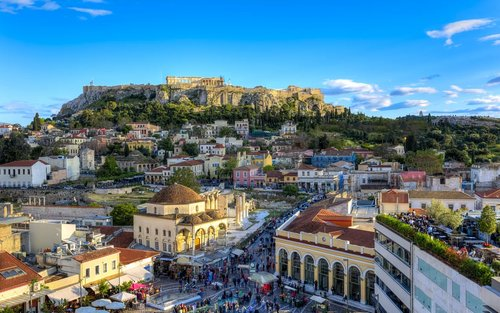
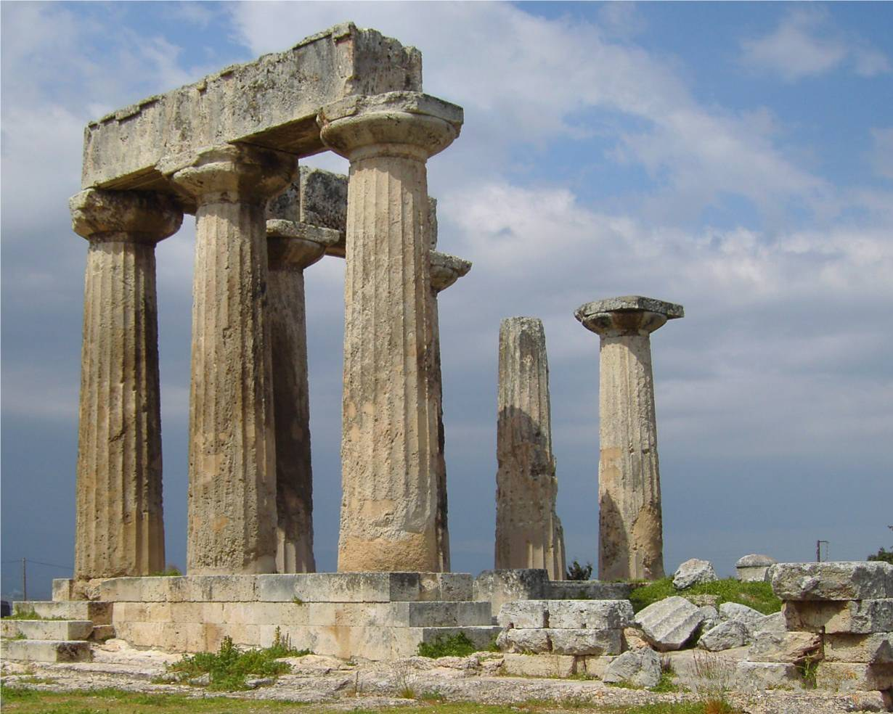
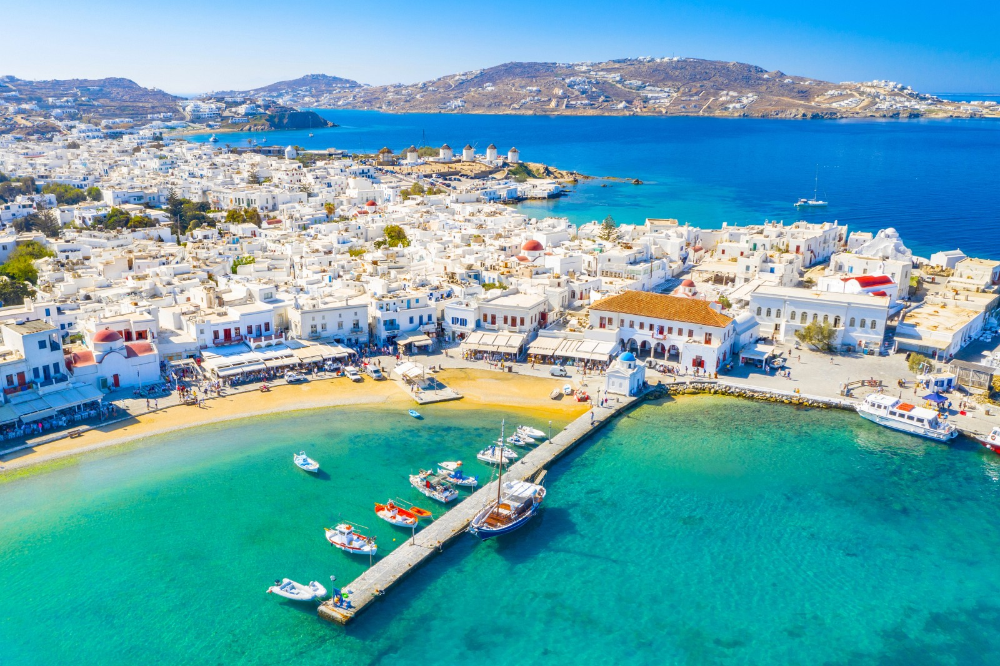
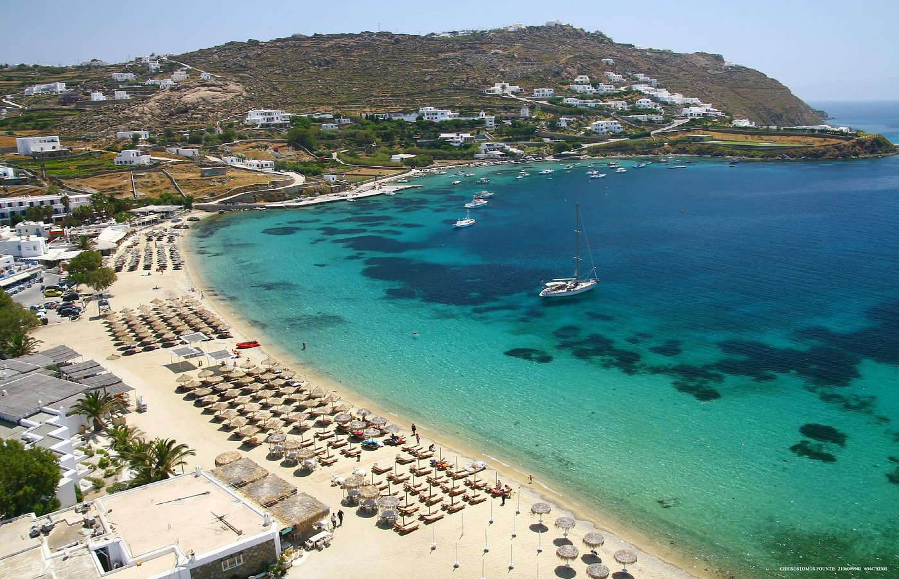
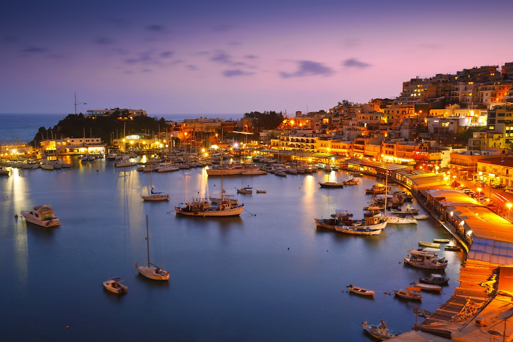
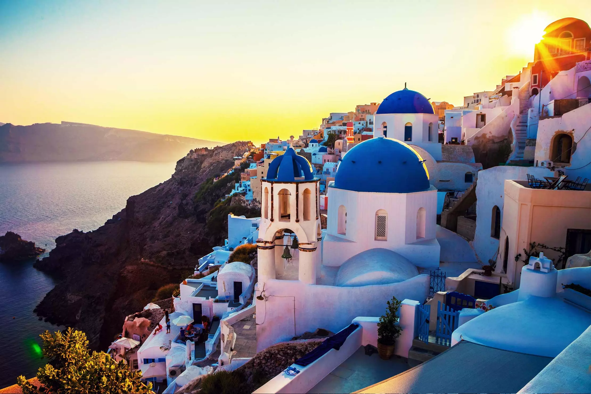

Sumérgete en la cuna de la civilización occidental combinando el peso de la mitología clásica con la luz inconfundible de las islas Cícladas. Este itinerario reúne en siete días los tesoros arqueológicos de la Grecia continental con el encanto cosmopolita y las aguas cristalinas del mar Egeo.
Comenzarás explorando Atenas, dominada por la eternidad de la Acrópolis y el Partenón, para luego viajar hacia las faldas del monte Parnaso hasta el santuario de Delfos, considerado por los antiguos griegos como el ombligo del mundo. Para cerrar el viaje con broche de oro, navegarás en ferry hacia la icónica isla de Mykonos, célebre por sus casas encaladas, sus molinos de viento y sus calas de azul intenso. Un circuito dinámico y perfectamente coordinado para vivir lo mejor de la Grecia histórica e insular.
Día 1: Origen – Atenas

Llegada al Aeropuerto Internacional Eleftherios Venizelos de Atenas. Recepción por parte de nuestro representante local y traslado privado al hotel seleccionado. Resto del día libre para comenzar a sentir el ambiente de la capital griega paseando por los pintorescos barrios de Plaka y Monastiraki, situados al pie de la Acrópolis, donde sus calles empedradas, tiendas de artesanía y tabernas al aire libre ofrecen una primera bienvenida inolvidable. Alojamiento.
Día 2: Atenas (Acrópolis y Centro Histórico)

Desayuno. Por la mañana, salida para realizar una completa visita panorámica por los puntos más emblemáticos de la ciudad: la Plaza Syntagma con el edificio del Parlamento y el cambio de guardia de los Evzones, el histórico Estadio Panatenaico —sede de los primeros Juegos Olímpicos modernos—, el Arco de Adriano y el monumental Templo de Zeus Olímpico. A continuación, ascenso guiado a la colina sagrada de la Acrópolis para admirar obras maestras de la arquitectura clásica como el Partenón, el Erecteion con su Pórtico de las Cariátides y el Templo de Atenea Niké. Culminaremos el recorrido en el moderno Museo de la Acrópolis para contemplar sus esculturas originales. Tarde libre para seguir explorando la ciudad a tu aire. Alojamiento.
Día 3: Excursión a Delfos – Atenas

Desayuno. Salida temprana por carretera hacia el interior de la Grecia continental atravesando la fértil llanura de Beocia y pasando junto a ciudades míticas como Tebas y Levadia hasta alcanzar las laderas del monte Parnaso. Llegada a Delfos, considerado en la Antigüedad el centro espiritual del mundo helénico. Visita guiada al recinto arqueológico para recorrer la Vía Sacra, el Tesoro de los Atenienses, el Templo de Apolo —donde la Pitia pronunciaba sus profecías—, el antiguo Teatro y el Estadio. Posteriormente, entrada al Museo Arqueológico de Delfos, donde destaca la célebre escultura en bronce del Auriga de Delfos. Almuerzo tradicional en ruta y regreso a Atenas al final de la tarde. Alojamiento.
Día 4: Atenas – Ferry a Mykonos

Desayuno. A la hora acordada, traslado temprano al puerto del Pireo para embarcar en el ferry de alta velocidad con destino a Mykonos, joya indiscutible del archipiélago de las Cícladas. Llegada a la isla, recepción y traslado al hotel. Resto del día libre para perderse por el encantador entramado de callejuelas encaladas de Chora (la capital de la isla), descubrir la iglesia de Panagia Paraportiani, fotografiar los icónicos molinos de viento de Kato Mili y disfrutar de una espectacular puesta de sol frente al mar en el barrio de la Pequeña Venecia. Alojamiento.
Día 5: Mykonos (Día Libre)

Desayuno. Día completo a su disposición para disfrutar de la isla según sus preferencias. Podrá relajarse en algunas de sus playas más famosas de arena dorada y aguas transparentes en la costa sur, como Ornos, Psarou, Platis Gialos o Paradise Beach, o bien realizar una excursión opcional en barco a la vecina isla sagrada de Delos, uno de los yacimientos arqueológicos más importantes de Grecia y lugar de nacimiento mitológico de Apolo y Artemisa, declarado Patrimonio de la Humanidad por la UNESCO. Alojamiento.
Día 6: Mykonos – Ferry a Atenas

Desayuno. Mañana libre para aprovechar las últimas horas en la isla, realizar compras en sus boutiques locales o disfrutar de un último baño en las aguas cristalinas del mar Egeo. Por la tarde, a la hora indicada, traslado al puerto de Mykonos para embarcar en el ferry de regreso hacia el puerto del Pireo. Llegada a tierra firme, recepción y traslado al hotel en Atenas para la última noche del viaje. Alojamiento.
Día 7: Atenas – Vuelo de Regreso

Desayuno. Mañana libre para las últimas compras o un último baño en el Egeo. Por la tarde, traslado al puerto de Mykonos para tomar el ferry de regreso al Pireo. Llegada y traslado al hotel en Atenas. Alojamiento.